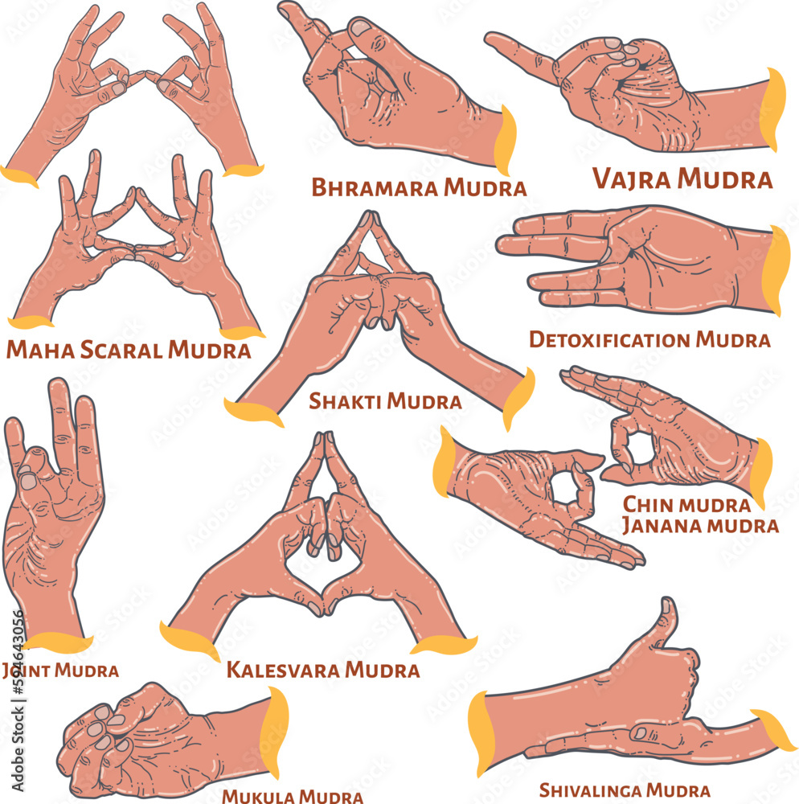
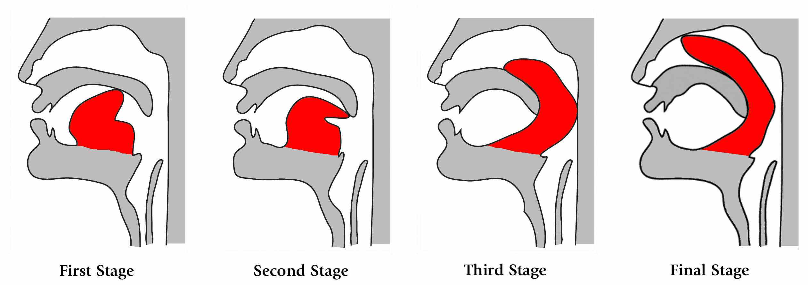
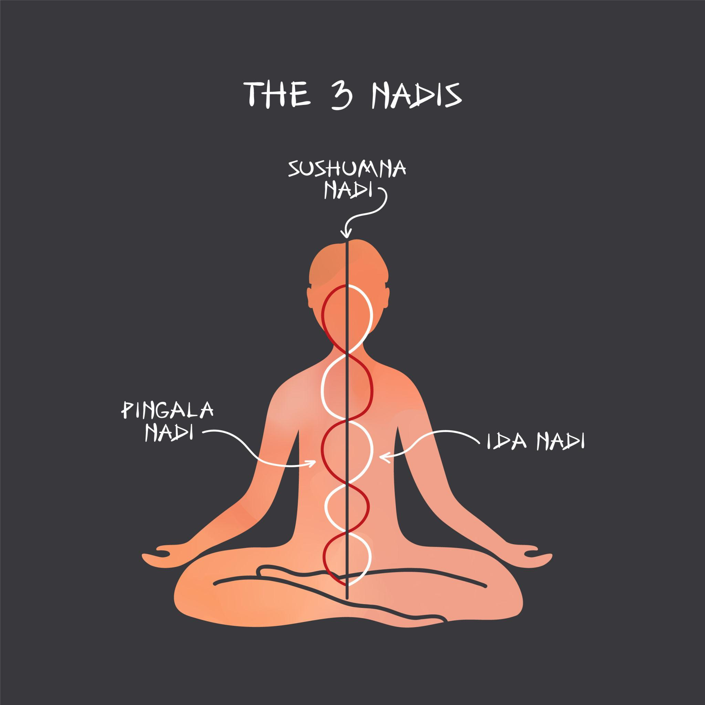
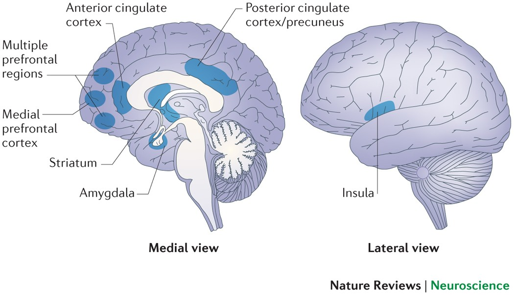
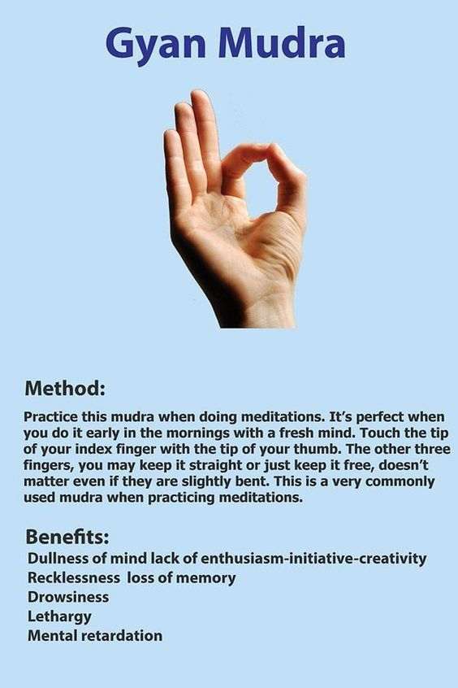
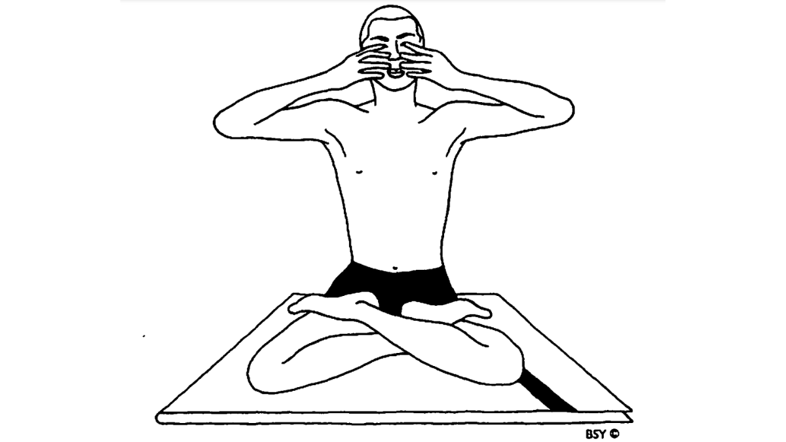

Мудрите в йога са специални позиции на ръцете и пръстите, които насочват енергията (прана) и фокусират съзнанието. Те са неразделна част от хатха йога, медитацията и пранаяма и предлагат мост между видимото тяло и по-фините енергийни слоеве – в тази статия ще разберете какво са мудрите, петте им групи и примери като Кечари мудра и Шанмукхи мудра.

Етимология и значение
Думата мудра идва от санскритския корен mud – „радвам се“ или „давам радост“ – и жеста се възприема като нещо, което „печати“ или „запечатва“ енергията в тялото. В класическите текстове мудрите се описват като жестове, които затварят веригите на праната и насочват я към желаните канали и центрове.
В Хатха йога прадипика и в Гхеранда Самхита мудрите са представени заедно с асани, пранаяма и бандхи като инструменти за овладяване на жизнената сила и ума.

На изображението е показана Кечари мудра – една от по-специалните и напреднали мудри, свързани с контрол върху сетивата и насочване на вниманието навътре.
Какво представляват мудрите?
Мудрите са комбинации от позиции на пръстите и дланите, понякога заедно с цялото тяло (като йони мудра или кайя мудра). Те не са произволни – всяка мудра има конкретен ефект върху потока на прана и върху психиката. Чрез допир, натиск или определено разположение на пръстите се стимулират зони, свързани с меридиани и енергийни центрове според традицията.
В ежедневната практика мудрите могат да се използват самостоятелно (например при седнала медитация) или в комбинация с асани и дишане – тогава ефектът се задълбочава.

Мудри и прана
В йогийската анатомия пръстите се свързват с петте елемента: палецът – с огъня и с „Аз“, показалецът – с въздуха, средният – с етера, безименният – с земята, а малкият – с водата. Чрез мудрите практикуващият балансира тези елементи и насочва праната – например към долните центрове за заземяване или към горните за по-ясно съзнание.
Класическите текстове описват мудри, които „запечатват“ енергията в тялото, като по този начин предпазват от разсейване и подготвят ума за по-дълбока медитация и вътрешно тишина.

Съвременен поглед
Днес мудрите се прилагат не само в йога зали, но и в рехабилитация, при стрес и при желание за по-добър фокус. Много хора откриват, че определени жестове успокояват или събуждат вниманието – това може да се обясни и с неврологични рефлекси в ръката, и с ефекта на фокусиране на вниманието върху тялото.
Независимо дали ги приемаме предимно като енергийни техники или като съзнателни жестове за успокояване и концентрация, мудрите остават достъпен и мощен инструмент в практиката.

Пет групи мудри
В традицията мудрите често се групират по вид и ефект. Ето пет основни категории:
- Хаста (ръчни) мудри – изпълняват се само с ръцете и пръстите (напр. Джняна мудра, Чин мудра, Апана ваю мудра).
- Мана (гласови) мудри – свързани с очите, ушите, носа, езика; използват се в някои напреднали практики.
- Кая (телесни) мудри – включват цялото тяло (напр. Випарита Карани, Йони мудра).
- Бандха мудри – комбинация с енергийни ключалки (бандхи) за задържане и насочване на прана.
- Адара мудри – фокусирани върху определени зони или центрове в тялото.
Започването с няколко прости хаста мудри (например Джняна или Чин мудра по време на седнала медитация) е чудесен начин да внесете мудрите в ежедневната си практика.

Тук е показана Шанмукхи мудра – жест, при който вниманието се отдръпва от външните сетива и се насочва към вътрешното пространство, подготвяйки ума за по-дълбока медитация.
Заключение
Мудрите в йога са жестове, които насочват енергията и съзнанието – от етимологията на думата до практическото им приложение в хатха йога, пранаяма и медитация. Те предлагат прост и ефективен начин да работим с прана и с фокуса на ума без необходимост от сложно оборудване – само ръцете и намерението са достатъчни за да започнете с мудри като Джняна мудра, Кечари мудра или Шанмукхи мудра.
Искате ли да ги включите в личната си практика? Разгледайте Naga Yogi програма за структуриран подход към хатха йога, или се запишете за безплатна 1:1 консултация.